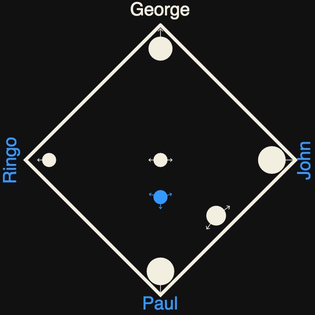
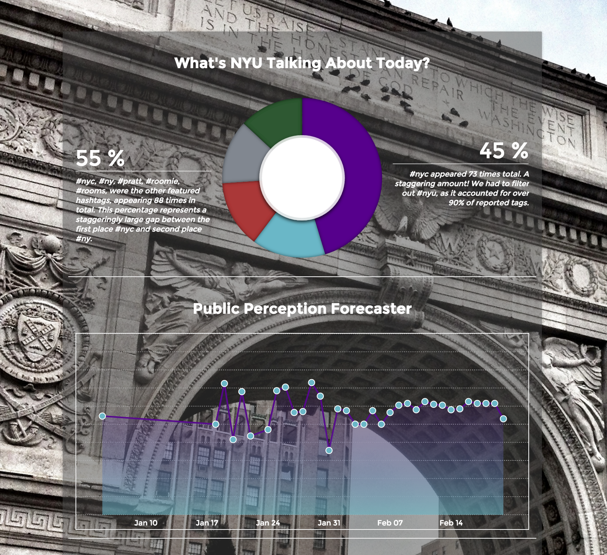
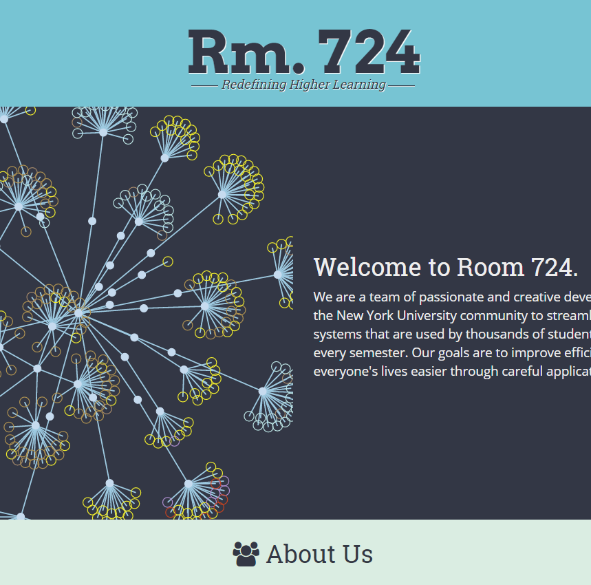

Sungear
WORK IN PROGRESS. Expected to launch in September. Sungear is a complex Node.js data visualization app which allows users to compare sets of data and see live visualizations of their unions and intersections.
Informed
NYU Spring '16 Demo Showcase. Written in Swift, Informed aggregates articles from outlets like The Guardian, NPR, and CNN to turn your daily news reading routine into a competitive iOS game.

Sentiment Forecast
Winner: HackNYU 2016. This web app features a C# back-end which makes various calls to Twitter, Tumblr, and Alchemy APIs to perform sentiment analysis. It then moves to d3.js for a timeline of sentiment visualizations.

p5 Pong
This project features p5, a resource for HTML canvas processing via javascript, to re-create the classic Atari game, Pong. Please note that the AI is brutally hard, and proof that I should never apply for a job at Skynet.

Enlightenment Map
Built to explore the crossroads between literary scholarship and modern web technology, this map uses jVectorMap and Raphael.js to illustrate some of the geographical hot spots in Enlightenment literature.

Room 724 Portfolio
A collection of data visualizations and great teammates, this portfolio highlights past and current web developers for NYU's Housing Department and an interactive web featuring some of our greatest projects.